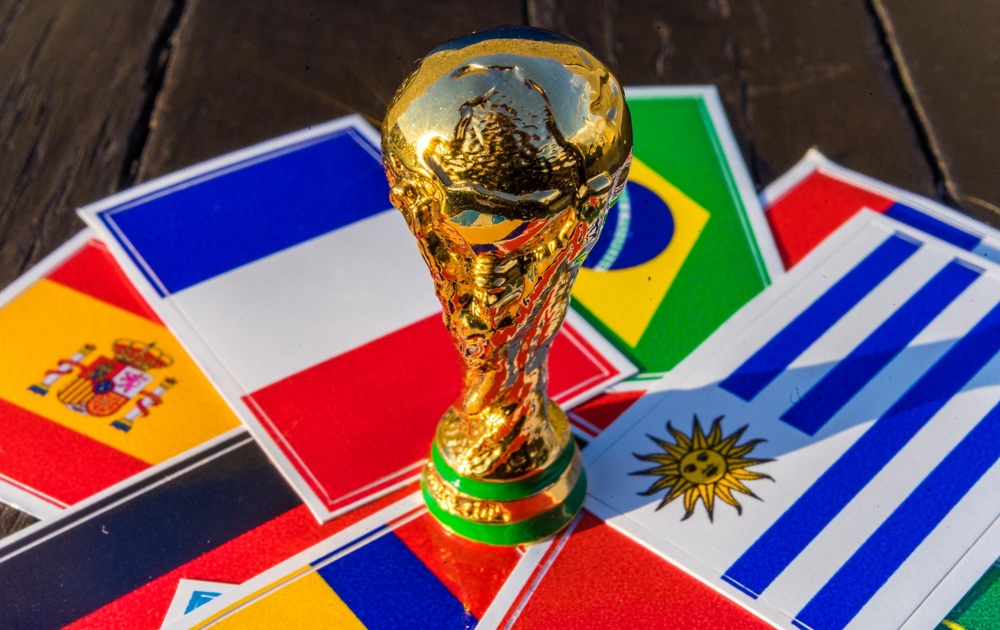
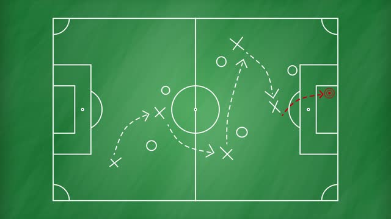
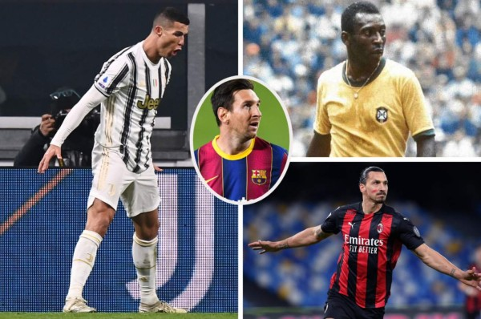
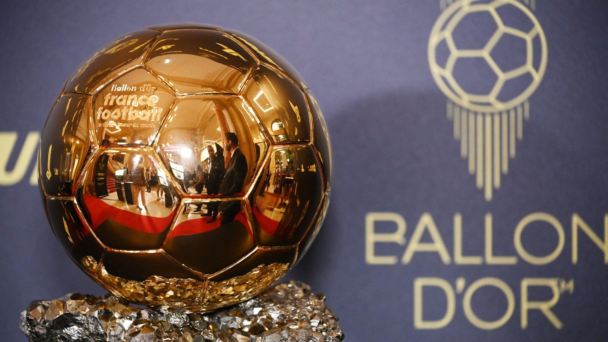
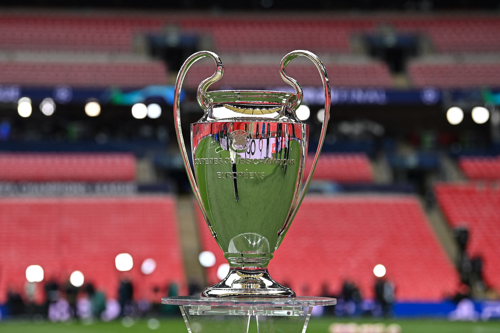
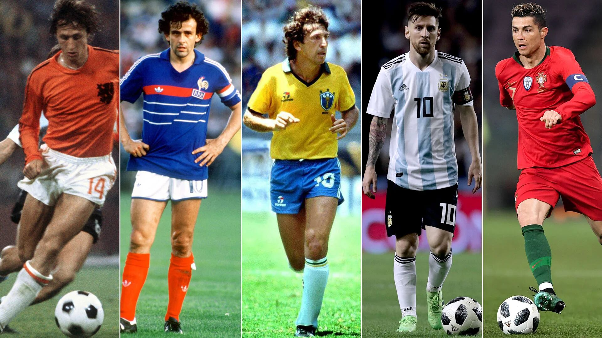
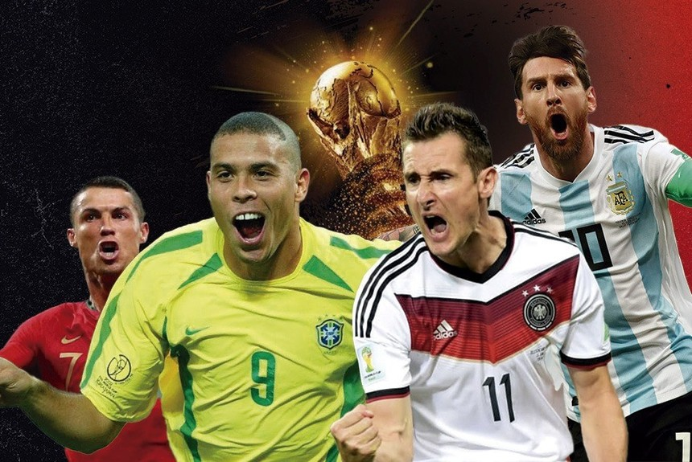
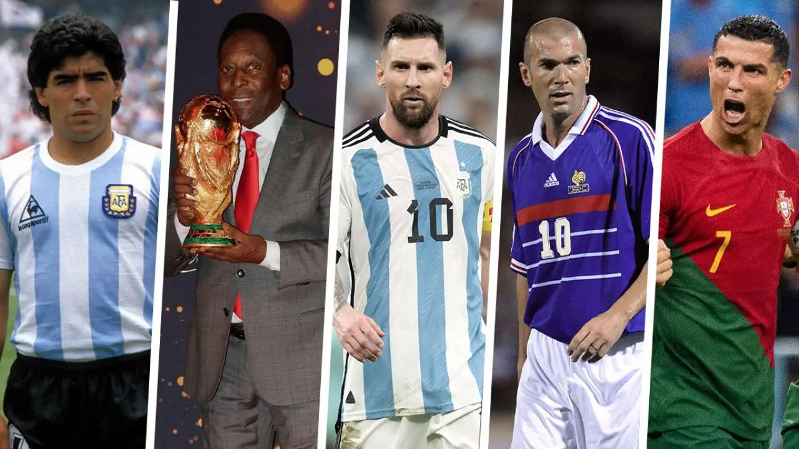
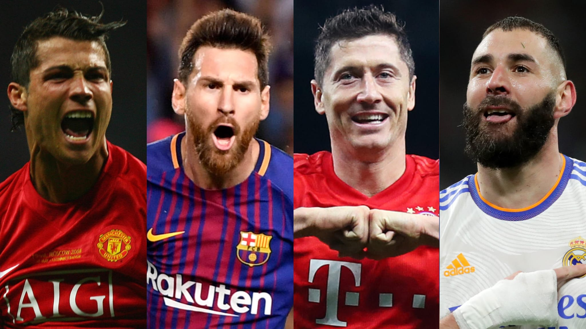
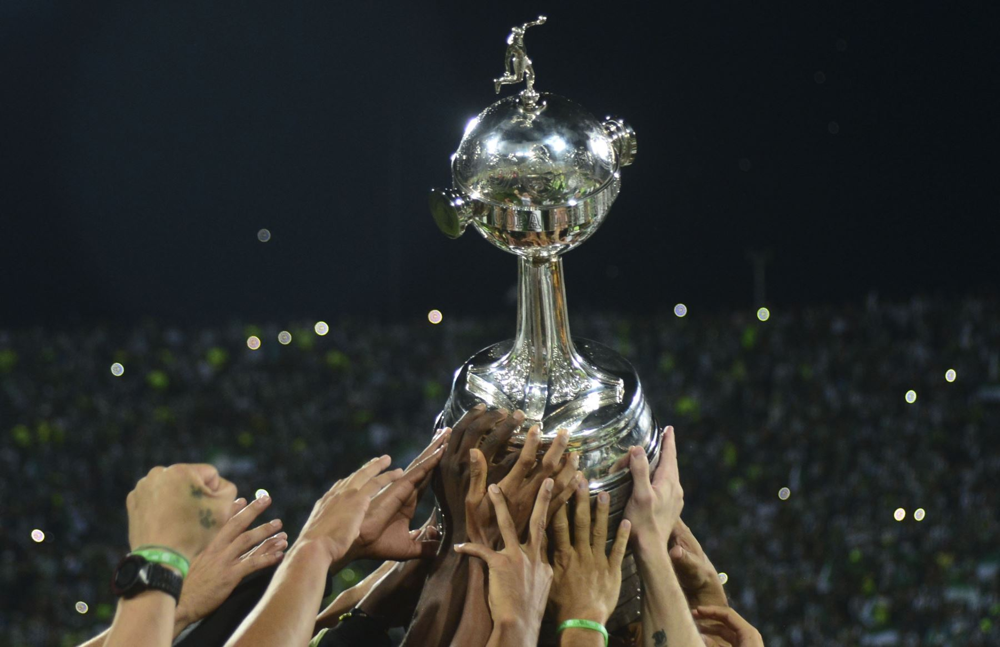

1. ¿Qué selección ha ganado más mundiales de fútbol?
 Brasil Alemania Argentina Francia2. ¿Cuántos jugadores tiene cada equipo de fútbol en el campo de juego durante un partido?
 5 jugadores 16 jugadores 7 jugadores 11 jugadores3. ¿Quién es el máximo goleador de la historia del fútbol?
 Lionel Messi Pelé Cristiano Ronaldo Zlatan Ibrahimovic4. ¿Quién es el máximo ganador del balón de oro en la historia?
 Lionel Messi Johan Cruyff Cristiano Ronaldo Michel Platini5. ¿Qué equipo ha ganado más Champions League en la historia?
 Barcelona Real Madrid Liverpool AC Milán6. ¿Qué selección de futbol llegó a tres finales de la Copa del Mundo pero nunca ganó el título?
 España Portugal Uruguay Países Bajos7. ¿Quién es el máximo goleador de la historia de los mundiales de fútbol?
 Cristiano Ronaldo Lionel Messi Miroslav Klose Ronaldo Nazario8. ¿Qué jugador ha ganado más mundiales de fútbol con su selección?
 Pelé Zinedine Zidane Giuseppe Meazza Diego Maradona9. ¿Quién es el máximo goleador historico de la Champions League?
 Karim Benzema Cristiano Ronaldo Robert Lewandowski Lionel Messi10. ¿Qué equipo sudamericano de fútbol tiene más Copas Libertadores en su palmarés?
 River Plate Flamengo Boca Juniors Independiente